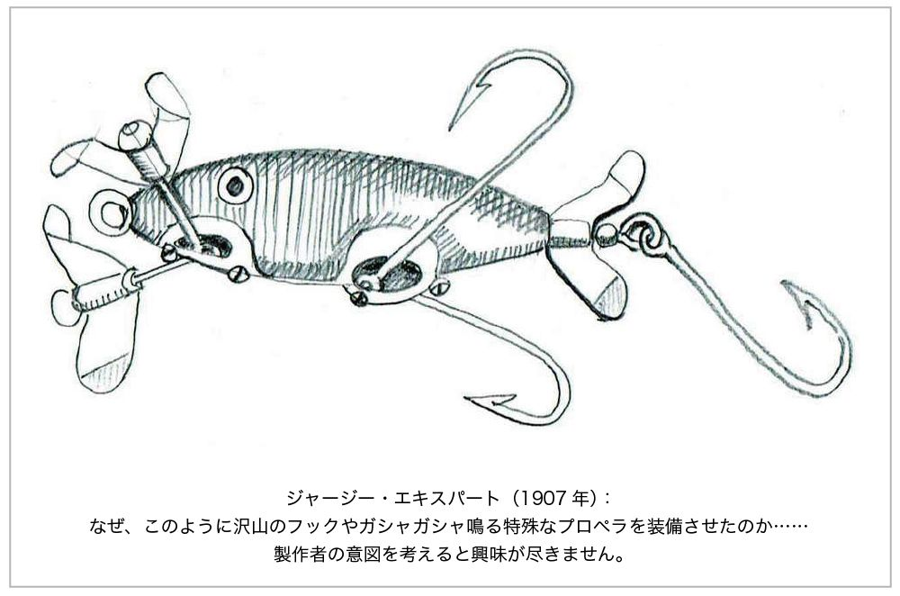
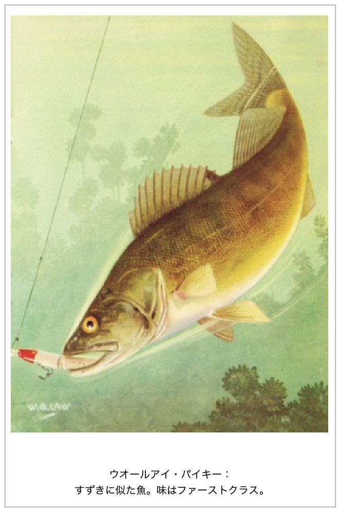
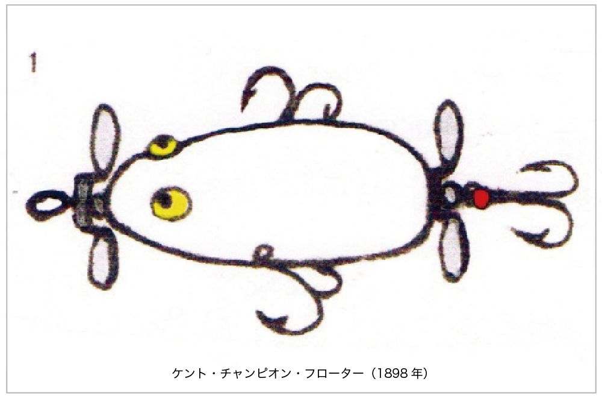
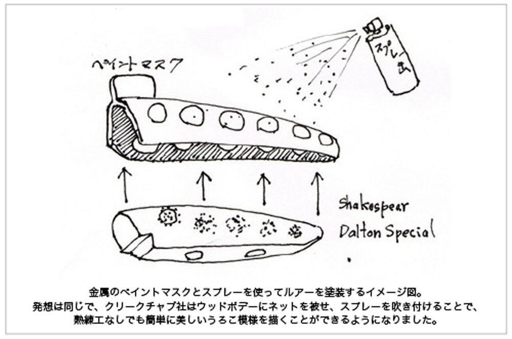
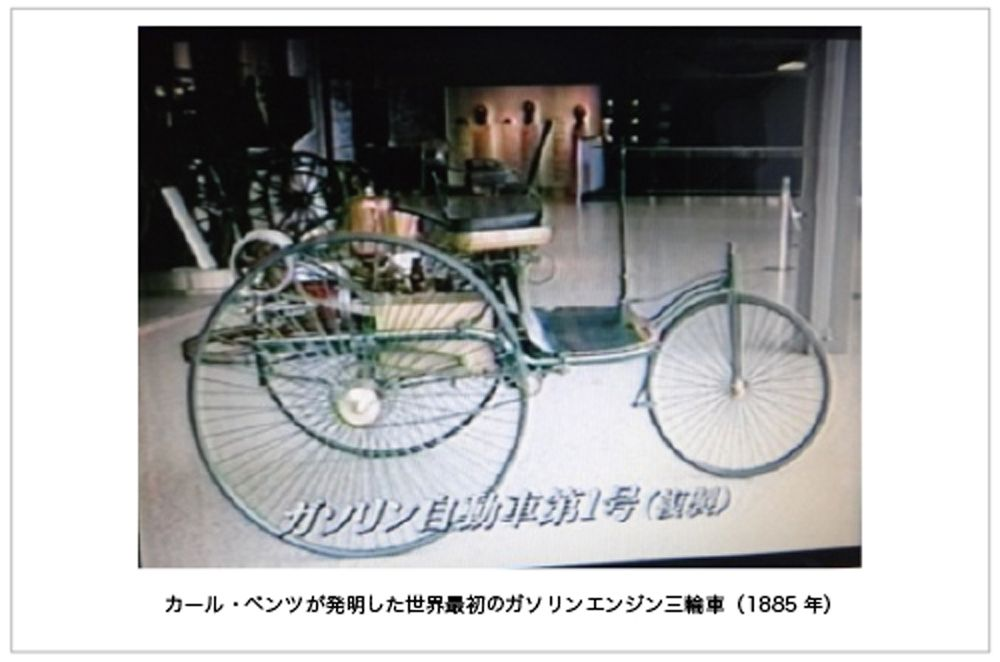
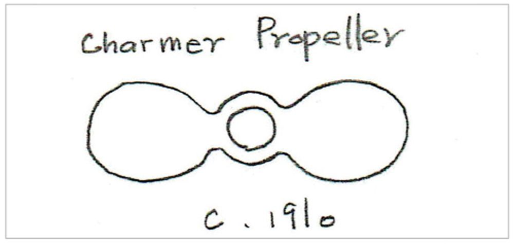
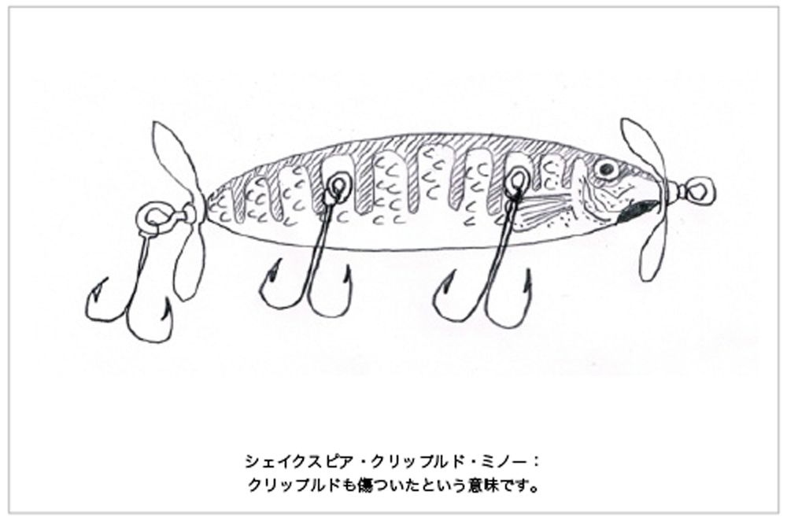

| 奥深きルアー復刻 アメリカンルアー・コレクション入門 | |
| 松下 文洋 | |
| (2016) | |
本書の紹介
私は30年にわたって、1890年～1930年代のアメリカン・ルアーをハンドメイドし、気がつくと、2,000個を復刻しました。
それゆえ、本書は単なるアメリカの文献の翻訳に留まらず、ルアーを復刻した者にしか分からない、名作ルアーの特色やデリケートな違い、製作者の創意工夫を読者に伝えてゆきたいと思っています。そのために、写真ではピンとこない場合は、自作のイラストを描いてみました。
名作ルアーを見つめていると、「貧しい移民だが、釣り人が願う理想のルアーを作り、アメリカンドリームを掴みたい......」という製作者の熱い思いが伝わって来るような気がします。
巻末に、購入者特典のPDF「アーリーアメリカン・ルアー年表
（メーカー別）」を付けました。これによって、ばらばらになりがちな知識が一目で、体系的に整理できるのではないかと思います。
本書を通して、より多くの方にルアーの魅力に触れてもらうことができれば望外の喜びです。
はじめに
＜奥深きルアー復刻＞
壁一面を埋め尽くすショーケース。一見、昆虫標本のようにも見えるが、そうではなく、釣りに使う道具、ルアー（疑似餌）です。一般的には釣り具屋で購入する人が多いだろうが、私のコレクションはすべて私が修復したり、一から手作りしたものです。これまでに作った数は2,000個以上になるでしょうか。
作り始めたのは今から30年ほど前のこと、もともと趣味で釣りをやっており、ルアーにも興味がありました。とある本で、アメリカの古いルアーを見て、そのデザインの美しさにむくむくと好奇心が沸いてきたのです。
買おうと思いましたが、値段に驚きました。中には100万円以上するものもあり、とても手がでません。工作好きだったことも手伝い、「ならば作ってやろう」と思い立ちました。
誰も教えてくれる人もいないので、参考になる文献やカタログを外国から取り寄せ、見よう見まねで作ったのです。
本業は不動産鑑定士。長さや形状を記した設計図を書くのはお手のものなので、時にはビンテージルアーを買い求め、もったいないと思いながらも分解して、構造を研究。
こうして製作した2,000個のルアーを年代別、メーカー別に72のドイツ箱に整理し、これまで製作のために調べてきた成果を3冊の図鑑にまとめています。ただ、膨大なページ数なので、一番面白く、エッセンスと言うべきことがらを「アメリカンルアー・コレクション入門」として短くまとめたのが本書です。
本書では、単にルアーの美しさやメカニズムを紹介するだけでなく、名作ルアーを生んだ時代背景や文化的側面も知っていただくと、より興味が増すのではないかと思っています。
例えば、後に大企業となるフルーガー社はドイツからの移民が始めた会社ですが、初めは自宅キッチンを工房として夫婦2人でスタートし、会社の看板を掲げた時、誰もドイツ語のPflueger（農耕用の鋤）という社名が読めなかったので「フルーガーと呼んでください......」と注を付けたほどでした。「誠意」「熱意」「弛まないハードワーク」をモットーに、創意工夫を重ね新製品を開発し、好景気にも乗って大ブームを作り上げ、熾烈な企業買収も繰り返して、アメリカ1の釣り具メーカーになったのです。
名作と言われるルアーを見つめていると「貧しい移民だが、釣り人が願う理想のルアーを作り、アメリカンドリームを掴みたい......」という製作者の熱い思いが伝わって来るような気がします。
また、現在と同じマスコミを使った広告宣伝、カタログを使った通信販売もこのころから始まり、ルアー販売競争は熾烈を極めました。ライバルのヘドン社の社長は、「ヘドンのルアーはよく釣れる」と書かれた幕を持って、気球から飛び降りたという記録も残っています。

また、私は時々ルアーを分解して「製作者が、なぜこのようなルアーを制作したのか」を、あーでもない、こーでもないと思案する時がありますが、その意図が理解できた時から、今まで平凡なルアーと思っていたものが突然、愛おしくてたまらないルアーに変わることがしばしばです。
このような復刻した者にしか分からない製作者の創意工夫やルアーのデリケートな魅力については、写真よりも自作のイラストで解説したほうが、より分かりやすいと思いましたので、チャレンジしてみました。
本書を通して、より多くの人にルアーの魅力に触れてもらうことができれば望外の喜びです。
アメリカン・ルアーの魅力・歴史
1、アメリカン・ルアーの歴史
1890年位から1930年頃までの時期に製作されたルアーは、今までの英国製の金属でできているスピナーに代わって、ウッド（木）で作られていて、デザインは温かみがあり、魚をたくさん釣るという機能面でも完成度が高く、コレクターとしては何より見ていて楽しく、味わい深いと感じています。
そして、当時のアメリカは高度経済成長に沸いていて、優れたルアーを開発してホームランを放てば「アメリカンドリーム」を掴み、今まで人類が経験したことがなかった豊かな暮らしを手に入れることができる「古き良き時代」でした。
アメリカン・ルアーの発展の推移を検証すると、この時代は大きく4つに区分できると思います。
1）1890年以前 英国から輸入した金属スピナーが主力だった時代
2）黎明期（1890年～1904年）レジェンド：ヘドン、パーデー、ローデス、ウッドなどがアメリカン・
ウッド・ルアーを発明
3）黄金期（1905年～1930年代）
4）衰退期（1930年代～現代）プラスチック化
それでは、順を追って紹介します。
1）1890年以前 英国から輸入した金属スピナーが主力だった時代
1890年頃までの釣りは、貴族や一部の富裕層がイギリスから輸入した高価な竿やリールを使い、主にフライ・フィッシングやスピナーなどの釣りを楽しんでいました。乗馬や狩猟などと同列で行われ、使う釣り竿、リール、金属ルアー（スピナー）は、高価なものが多かったのです。
当時のハーディー社（Hardy Brothers Limited）の釣り具カタログを見ると、その状況がよくわかるでしょう。
これら輸入された英国の金属製スピナーは作りが精巧で、素材としては銀や真鍮、鉄、皮、植物の葦（あし＝クイール）などが使われていました。
1852年 ブエル（Buel）がアメリカで初めて、アローヘッド・スピナー（Arrowhead spinner下図）の特許を取得します。
このように、1890年以前は金属製のスピナーが販売の主力で、ウッド・ルアーはまだ見ることができない状況でした。
2）黎明期（1900～1904年）
＜アメリカのゲームフィッシュ達＞
しかし、アメリカの川や湖、沼に沢山いるブラックバス、ブルーギル、巨大なパイキー、キャットフィッシュ（なまず）などの「陽気なアメリカ固有の肉食魚」を狙うには、アメリカ独自のルアーが望まれていたのです。
陽気と言う意味はいずれも獰猛な肉食魚で、水面から跳ね上がってルアーに食らい付き、釣り師はそのダイナミックな光景を目で確認でき、釣り上げるまで強い引きで楽しませてくれるからです。
アメリカの主要なゲームフィッシュを紹介しましょう。なお、4枚のイラストはヘドン社、クリークチャブ社の宣伝用に描かれたもので、良く見ると魚の口には人気のルアーがかかっています。


パンフイッシュは小型ながら獰猛で、繁殖力が旺盛。桟橋の下やリリーパッド（睡蓮などの浮葉植物が生い茂っている場所）の周辺で良く釣れます。
各地域ごとに呼び名が異なり、サンフィッシュ、パンプキンシード（かぼちゃの種）などの名前が付いていて、それぞれウロコの枚数が微妙に異なります。
ノーザン・パイキーとマスクラウンジ、並びにブルーギルの相違点のイラストは'The Sportsman's Way How To Prepare FISH and SEA FOOD'by Ruth Elizabeth Mills Copyright 1946より。

他にも、アメリカ北部やアラスカには多くの種類のサケやマス、フロリダなど南の海ではカジキ、ろうにん鯵、バラクーダ（オニカマス）、シイラ、シーバスなどが格好のゲームフィッシュとなっています。
＜ウッド・ルアーの誕生と課題＞
このようなアメリカ固有のゲームフィッシュを釣る時は、金属のスピナーよりもウッド・ルアーのほうが適しているのです。
例えば、イギリスの典型的なゲームフィッシュのサーモンやトラウト（マス）は、海や流れの速い河川にすみ、障害物などは比較的少なくアクションの単純な金属のスピナーでも釣れるのですが、これに対し、アメリカのゲームフィッシュの典型のバスは、流れの緩い湖や沼などに住み、「リリーパッド」と呼ばれる睡蓮など水草が生い茂る場所などを好んでいます。
そのような場所は、障害物が多いことから、ルアーを移動させる距離は短くなり、そういう厳しい条件でも多様なアクションが演出できるルアーが望まれていたのです。
もう1つ、ウッド・ルアーには解決しなければならない課題がありました。それは、木製のルアーは金属製スピナーに比べて強度が落ちるので、大きな魚でも釣り上げられるようフックを、しっかりボデーに取り付けなければならないということでした。

＜初めてウッド・ルアーを作った4人のレジェンド達＞
■ジェームス・ヘドン
そのような木製ルアーは、1890年代にアメリカで初めて生まれ、先鞭をつけたのはヘドン社の創業者で、尚且つ天才的なルアーデザイナーでもあるジェームス・ヘドンと信じられています。
1860年代から自宅キッチンを工房として、父親とともに数々のウッド製「デコイ（※おとり）」を作っていました。

（注）スピアリング・デコイ漁：冬の湖で氷に穴をあけ、デコイに寄ってきた大型のゲームフィッシュをエスキモーのようにモリで突く漁。
多くの釣り人からアメリカン・ウッド・ルアーのレジェンド（伝説の人）と呼ばれているミスター・ヘドンの古い伝えの話があります。
1898年のある朝、ミシガン州ドワジャック市にある湖畔の粉ひき小屋のそばで、一緒にリス猟をする友人を待っていました。ヘドンは待ちながら、木を削って作った自作のルアーを水面に投げ入れると、驚くほどの数のバスをヒットさせたのです。
また、彼の木製ルアーには、フックが論理にかなった方法で、強固に固定されていたため、大きなバスがかかっても逃がすことがなく、確実にその日の夕食とすることができました。
それゆえ、アメリカの多くの釣り師は、ヘドンがアメリカン・ルアー作りを最初に始め、木製ルアー・ビジネスの偉大な創始者だと信じています。
伝説ヘドンの物語は面白いけれども、1890年代には複数のパイオニアが優れたウッド・ルアーを同時に制作していたので、誰が本当のパイオニアかは定かではないのです。ヘドン以外のパイオニアが余り知られていない理由は、彼らのデザインやパテントが大手釣り具メーカーによって買い取られていたためと思われますが、彼らの優れた作品のいくつかを紹介しましょう。
■オハイオ州ケントのフレッドAパーデー
1898年、パーデーが作ったケント・アーテイフィカル・ミノーは、木製ボデーを貫通した頑丈なワイヤーがプロペラと尻尾のフックを連結しているので、どんな大型魚でも逃がさない頑丈な構造でした。
彼のデザインを大手釣り具メーカーだったフルーガー社が買い、1898年、下図のトローリーミノーとして販売し、ヒットさせています。
そして、数年後に発売されたトローリーミノー・セカンドバージョン（下図）では、従来のガットタイ（ギターの弦でフックを結ぶ）が無くなり、5本のフックすべてに頑丈な金属製フックハンガーが装備され、これによって近代ルアーのスタンダード（基準）が完成したと言われています。
また、パーデイは不朽の名作フロッグ「ケント・チャンピオン・フローター」を1898年頃に作りました。デザインがシンプルで、このルアーも頑丈な貫通式ワイヤー・フックハンガーを採用しています。フルーガー社はこのパテントも買収し、ケント・フローターと名付けて発売し、100年以上も生産を継続するほど、大ヒットさせています。

■ミシガン州カラマズーのフレッド・ローデスとその一族
7個のローデス・キャビンベイトは、フレッド・ローデスの死後、ミシガン州カラマズーの彼の山小屋で偶然発見されたことから名がついたと言われ、ワインのコルク栓を加工してラフに作られたプロトタイプ（試作品）でしたが、抽象画の世界から抜け出てきたような革新的なデザインは目を見張らせるものがあり、後のアメリカン・ルアーに大きな影響を与えました。
フレッド・ローデスは、フックを頑丈に繋ぎ止めるシステムとして、ボデーを貫通させた1本の金属ワイヤーに5本のフックを連結させ、そのメカニズムがボデーに空けた穴から覗けるという独創的なフックハンガーを開発し、フェザードミノーに装備しました。
1905年、彼はこのシステムを更に改良してローデス・パーフェクト・キャステイング・ミノー（下図）を発表しています。
フレッドの兄弟：バート・ローデスは生きたカエルのように後ろ足を動かし、フックが藻に絡まりにくい「ウイードレス・メカニカル・フロッグ」を作っています。このアイデアはシェイクスピア社によって、1908年に製品化されます。
シェイクスピア社は、1905年に上記ルアー達のパテントを保有していたローデス社（Rhodes's Kalamazoo Fishing Tackle Company）を会社買収（M＆A Mergers and Acquisitions）し、ローデス一族のアイデアを次々と製品化してゆきます。
■4番目のパイオニアはウッド
我々マニア垂涎の名作ルアー「ザ・エキスパート」はウッド（F.C.Wood）が製作し、1902年に発売されました。赤いギルマーク（Gill Mark 赤いエラ）が印象的な美しいボデーには、誇らしげに「The EXPERT」と刻印され、フックの根元には鋭い針先で自らのボデーを傷つけないように、「飾りワイヤー」が取り付けられています。
このウッド社は1905年にクラーク社に買収され、さらに1910年にはザ・キーリング社に買収されるという運命をたどります。
3）黄金期（1905年～1930年代）
＜始まり・なぜ1905年か＞
1905年からウッド・ルアーは爆発的に売り上げを伸ばし、いわばブームが起きた年です。また、この前後1～2年にかけて、ヘドン社から美しく品質の高い「ドワジャック＃150」、クラーク社から不朽の名作「ザ・エキスパート」が発売され、他社のルアーもこれに負けまいと品質やデザインがよりレベルアップされました。
そして、今やデザインが良いのはあたりまえで、全国的な販売ネットワークでまとまったロット（数量）が販売されないと、大ヒットとは言えないようになっていました。
主に上記の理由で、1905年を黄金期の入り口と定めました。
＜1907年、ヘドン社の販売促進プログラム＞
伝説ヘドン社の創業者：ジェームスヘドン（1845～1911年）は、1867年に「ヘドン養蜂所」を設立し、1880年代にはアメリカ及び海外まで、はちみつ製造業として名をはせるまでに発展させました。他にもいろいろな事業に手を広げ、1887年には民主党員向けの週刊新聞である「ドワジャック・タイムス」のオーナー兼編集者となり、1888年には1年間だけでしたが、ドワジャック市の市長を務めています。
このように、ルアー製造会社を興すまでに、事業を発展させるための広告宣伝の知識、人脈などを着々と準備していました。
満を持して、1902年にミシガン州ドワジャックで2人の息子（ウイリアム＆チャールズ）と会社を興すと、次々にヒット作を放ち、1907年には工場を増設するまでに発展させました。
1907年、息子のチャールズ・ヘドンは市場占有率をより高めるため、積極的な販売促進プログラムを推進します。
もともとヘドン社は商品の優秀さで発展してきていましたが、ルアー業界トップを狙うには、全国販売網の構築が課題でした。そのため、販売に消極的な卸商（仲買人）がいれば、デモンストレーター（実演販売する人）を派遣し、ヘドンのルアーが良く釣れることを証明し、良いビジネスになると精力的に説得して回ったと言われています。努力の結果、1910年までに地元のアメリカ東北部のみならず、西海岸のサンフランシスコ、トロント、カナダに販売代理店を拡大するまでになりました。
息子のチャールズ・ヘドンは、ジェームス・ヘドンの死（1911年）後も、精力的に販売促進策を継続し、全国販売ネットワークを構築した後は、店頭販売のみならず、カタログによる通信販売にも力を入れました。
1914年にはルアーを入れる箱に宝石のようなイラストを描き、また、1922年にはカタログの表紙にダイナミックな絵を描きました......それは、水面から飛び跳ねた巨大なバスの口に、ヘドンのルアーがかかっている絵で、顧客にヘドンのルアーは良く釣れることを連想させました（下図）。
また、全米で最も権威ある釣りの競技会"フィールド＆ストリームズ・ナショナル・フィッシング・コンテスト（Field＆Stream's National Fishing Contest）"において、一番沢山の賞を獲得したのもヘドン社でした。
加えて、チャールズ・ヘドン自身が「ヘドンのルアーはよく釣れる」と書いた横断幕を持って気球から飛び降りるなど、「世間をあっと言わせる」宣伝も行ったと伝えられています。
これら弛まない努力によって、「ヘドンのルアーは良く釣れる」及び「Heddon Made-Well Made（ヘドン社製は高品質）」というブランドイメージを作りあげ、1902年の創業時、ルアーの生産数は年6,000個でしたが、1950年には1日12,000～15,000個まで拡大しました。
■家族の争いも起きたが「ヘドンのルアーはパーフェクト」
ヘドン社の数あるヘドンルアーの中でも、＃150 ザ・モホーク ハイホーヘッド（＝モヒカン族の頭）と呼ばれる角張ったボデー、そしてクラック・ペイント（ひび割れ）塗装は人気が高く、コレクター垂涎の的となっていますが、これを販売したのはヘドン本社でなく、ジャネット・ホーリーという別会社でした。
レジェンドに多い話ですが、（二男）チャールズ・ヘドンは販売促進のためとは言え、「熱気球からパラシュートで降りる」など、しばしば世間をあっと言わせる奇行を行ったのですが、（ジェームスの長男）ウイリアムの奥さんのローラ・ヘドンは、こういうチャールズ・ヘドンを嫌ってフロリダに別居し、新会社を作って「＃150 ザ・モホーク」「フロリダ・スペシャル」などを、ローラのペンネームである「ジャネット・ホーリー（Janet Hawley）」という独自ブランドで販売したと言われています。（勿論、ヘドン本社でも＃150 ハイホーヘッドは売られていました）
家族の争いも起きましたが、今でもヘドン社はルアー収集家にとって、手に入れやすさ、クラフトマンシップあふれる高い品質、パイオニア企業が醸し出すロマンチックなイメージなどで、最も人気の高いメーカーであることは揺るがないでしょう。
＜シェイクスピア社によるローデス社の買収は、アメリカで最も成功した企業買収事例＞
このように、1905年以降、ヘドン社が矢継ぎ早に名作ルアーを販売する中、他社もこの成長分野を手中に収めようと、自分たちの得意分野（資本力や全国販売網など）を生かして、ヘドン社に対抗できるルアーの開発・販売に邁進するのです。
シェイクスピア社は、初期の発展の段階では個人の特許やデザインを買い取り、あるいは優れた会社を買収して発展するスタイルをとりました。前述のとおり、1905年にローデス社を買収しましたが、この会社はローデスの2人の叔父の特許をも保有していたので、貫通式ワイヤー・フックハンガーも手中にすることができ、これが後に大きな宝をもたらすことになります。
シェイクスピア社は、買収したローデス一族のアイデアを次々と製品化しました。1907年にサブマージド・ウッデン・ミノー＃44（Submerged Wooden Minnow ＃44 下図）を発売すると、そこで採用した「貫通式ワイヤー・フックハンガー」の特許を巡って、類似のシステムを販売していたアメリカ最大手のフルーガー社と激しく争い、法廷闘争となります。
シェイクスピア社は、この方式の本家本元ともいえる「ローデス社」を買収していたことで勝訴し、以降「貫通式ワイヤー・フックハンガー・システム」を装備した高級ルアー販売において、フルーガー社を排除して、独占的な権利を得ることができました。
ちなみに、当時の最高価格のルアーはヘドンの＃150でしたが、＃44は端正なイギリス風のデザインに加えて、メカニカルな貫通式フックハンガーが外から見え、かつ分解することもできる「シースルー機構」を備えていたので（機械好きにはたまらないですね）、ヘドン＃150の強力な対抗馬として販売を伸ばし、同時にヘドン社にも負けない高いブランドイメージも獲得することができたのです。
シェイクスピア社は、その後も天才ローデス一族のアイデアを次々と製品化し、ヒットを重ねたので、アメリカでも屈指の総合的釣り具メーカーに成長してゆきます。それゆえ、ローデス社の買収は、アメリカにおける最も成功した買収事例として語り継がれています。
なお、シェイクスピア社は1970年代には、かつて最大手企業だったフルーガー社をも買収してしまいます。
＜後発・クリークチャブ社の躍進＞
1906年はルアー界に新たな新星が誕生します。3人の釣り師がインデイアナ州ギャレットという小さな町で小さなルアー会社を創業し、1910～1919年に発売した"クリークチャブ・ウイグラー"は、も予想しないほどの大ヒットとなりました。その会社の名は「クリークチャブ CCBC」です。
クリークチャブ社はルアーメーカーとしては後発ですが、ルアー生産における2つの革命を起こし、業界全体を変革しながら、発展したと言われています。
1つは、1919年にネットを使いスプレーでルアーの鱗を描く特許を得たことです。

2つ目は、1920年にルアーを水中深く沈めるためのダイビング・リップの特許を獲得したことです。そして、それを装備した"パイキー"ルアー（下）は空前の大ヒットとなりました。ダイビング・リップを付けたおかげで、シャロー（水面0－1m）、ミドル（中層）、デープ（深場）を釣ることができ、釣果は倍増したからです。
クリークチャブ社は1920～1930年代にかけて、ヒット作を連発しました。他社と一味違う温かみのあるデザインは見ていて楽しいですね。
＜競技会でプロが誕生、釣り具の品質が格段に向上＞
また、ヘドン社やクリークチャブ社など、ルアーメーカーは拡販のためにバス釣り競技会を各地で開催しました。そこでは、「同一条件の中で、誰が一番多く釣り上げることができるか」「一番大きいバスを釣り挙げたのは誰か」が関心事となり、優勝者には多額の賞金が与えられました。そのため、釣りのプロが養成され、同時にワールドレコードクラスの超大型ゲームフィッシュを確実に釣り上げるロッドやリール、ルアーの品質が目覚ましく向上しました。
そして、釣りは食料目的から人よりたくさん釣る競技（スポーツ）へと変化していくのです。
＜小型船外機の発明と普及＞
■1909年にエヴィンルードが船外機を発明
この時期の小型船外機の普及が釣りやルアーにも大きな影響を与えたので見てみましょう。
最初の実用的な船外機は、1909年にノルウェー系アメリカ人オーレ・エヴィンルードにより開発されました。初期のプロトタイプは2馬力発生させるのに重量が60～80kgもあったので、エンジンはボートに固定され、別に取り付けた舵（ラダー）で進む方向を定めていました。
エヴィンルードは改良を重ね、現在まで引き継がれている小型船外機のスタンダードとなった1917年式モデルを誕生させました。そこで採用された「クランクシャフトが垂直にセットされ船外機全体を回転させる構造」は画期的で、船外機だけで船の進む方向が決められるようになったのです。
しかし、舵が要らなくなった1917年式エヴィンルードでも重量は50kgもあり、また高価なため、個人の釣りボートへの利用は制限されていました。

これを打ち破ったのは、1924年製ジョンソン・シーホース2馬力船外機です。当時の同クラスの半分の重量（35ポンド＝約17.5kg）＆コンパクトに加え、現在まで引き継がれているロープを使った「ナックルバスター・ノブ（リコイルスターターとも呼ばれている）」、「フライホール・マグネット（バッテリー無しで自動点火）」、信頼性高いキャブレターを組み込み、140＄という価格が好評を博し、初年度に3,342台を売り上げたのです。
その後ライバルのエヴィンルード社、マーキュリー・マリン社、ネプチューン社などから軽量・コンパクトな船外機が発売され、釣り人へ普及していきました。
■船外機と「バスの生態についての新理論」は、釣り方をダイナミックに変えた
手漕ぎボートに乗っている2人の若者と、エヴィンルード社製船外機を装備した紳士の釣り師が出会うところから物語は始まります。
「バスがいそうな浅場のリリーパッドや流れ込みを狙って釣ったが釣れないので、場所を移動しようと1時間も漕いだので疲れました。あなたは沢山釣っているのでプロの漁師ですか」
「いやいや、プロではないですよ。船外機を付けているおかげでトローリングもキャステイングも楽にでき、また、浅場だけでなく水深の深いところも探るから沢山釣れるのです」
「いや驚いた。深いところでは釣れないと思っていました。教えてくれませんか」
「古い説では、バスは殆どの時間を水深の浅い場所で過ごし、暑い時期とか特別の時だけ深場に移動し、また、縄張り意識が強いので単独か雌雄2匹で住んで、のろのろと泳ぐのでルアーは速く動かしては釣れないと考えられていました」
「勿論、これは間違ってはいないけれど、バスは多くの時間を"水深の深いサンクチュアリー（楽園）"で過ごしている事実が発見されたのです。そこは水温が適切で酸素が豊富でバスに快適なのです」
「"サンクチュアリー"って何ですか。教えてください」
「まだ、知っている人は少ないが、バスはしばしば100匹ほどの群れを作り、深い穴に住み着いていることがわかってきました。そこが"サンクチュアリー"です。その場所を見つければ、あなたはこの州で定められた上限の数を釣ることができますよ」
「それでは、あなたは深いところだけを狙っているのですか」
「いやいや違う。バスは夜になるとカエルやザリガニなどの餌を食べるために水深の浅い餌場へ再び出てきます。だから、水深の深い"サンクチュアリー"と、浅い餌場、そして2つを繋ぐ行き帰りの通り道（ミグレーションルート Migration Routes）、この3ケ所を狙うのです」
「つまり、バスの集団は"サンクチュアリー"と浅い餌場を1日か2日のサイクルで移動し、その移動のルートは湖の中心に棒状に突き出しているのです。あなた方も、その3ケ所を狙えば沢山釣れますよ」
「明日は私の船で"サンクチュアリー"を案内して、沢山釣れることを証明してあげましょう」......以下略します。
■自然環境保護と釣りのマナー
このように、技術革新によって手漕ぎのボートから、小型の船外機を付けたボートを利用するようになると、素人でもプロの漁師並みの釣果を得ることが可能になり、無尽蔵とまで言われたアメリカの河川や湖の巨大なゲームフィッシュも次第に乱獲され、資源の枯渇の問題が起きてきました。釣りがスポーツ化したことも追い風になって、「釣った魚をリリースする」ことが良いマナーとなっていったのです。
4）衰退期（1930年代後半～）
＜第二次大戦中の戦意高揚ルアー＞
ここに1942年に作られたクリークチャブ社の名作：ダイブ・ボンバー（Dive Bomber......潜水する爆弾）ルアーがあります。ボデーには誇らしげに「トントントンツー（我が軍勝てり！）のモールス信号が刻まれ、戦意高揚のために作られました。
第二次戦争中、多くの釣り具メーカーは生産を制限され、軍需品に生産を転換させられました。ヘドン社ではスチールロッド製造用の機械を使って、撃墜されたパイロットが救助隊と連絡を取るための「ボックスカイト（無線送信用の立体凧）」を生産し、微風でも良く上がる高性能ゆえ、軍から表彰されたとの記録があります。
＜プラスチック化＞
1930年代になると、ヘドン社の「シー・スプーク」などルアーの素材として合成樹脂が採用されるようになりますが、初期の合成樹脂であるピラリンは衝撃に弱く、価格も高かったため、半透明の素材の特性を生かし、よく釣れる高級品のルアーとして商品化されました。
その後、合成樹脂は急速に改良され、デュポン社がプラスチックを開発すると、岩にぶつけても壊れない丈夫さも得るなど品質が向上し、水に強く、複雑な造形も可能、加えて大量生産に適し、低価格が実現できるという理由で第二次大戦後は、メジャーなルアーは全てプラスチック化してゆきます。

＜トップ企業：フルーガー社から見た「ウッド・ルアーの盛衰」＞
フルーガー社は、1900年には総合釣り具メーカーに成長していましたが、そのカタログでは、ウッド・ルアーはトローリーミノーなどほんのわずかしか扱っていませんでした。当時の生産の主力はスピナーやリールでした。
ウッド・ルアーの劇的な成長は、1906年から1930年にかけてでした。そのブームが過ぎた後は、パルーオウーマイン（下図）やムスタングなどの僅かの主力ルアーの生産を継続したものの、今までのメジャーなウッド・ルアー達は生産をやめてしまったのですー
1930年以降は、フルーガーは得意分野のリールに力を注ぎ、シュープリーム、サミット、アクロンなどは業界のスタンダードとなり、会社は繁栄を続けました。
しかし、1930年代の終わりに、英国ハーディー社が世界最初のスピニングリール「ザ・アルテックス（The Altex） 筆者所蔵」（上図）を発売すると、フルーガー社の得意とするキャステイング・リールは衰退し始めるのです。
1960年代にスエーデンABU社製アムバサダー・リール（Ambassadeur 外交官と言う意味）をカタログのラインナップに載せる頃から、彼らの市場占有率は縮小し、最後は1970年代にライバルのシェイクスピア社へ売却を余儀なくされます。
ルアーコレクターが好む1900年から1930年までの期間、釣り具業界最大の企業が、戦後のプラスチックルアーやスピニングリールの登場などに翻弄され、消滅したのです。
同様に、伝説のヘドン社も1951年に「ダラスカウボーイズ・フットボールクラブ」のオーナーだったマーチン一族に売却され、またユニークなデザインで一世を風靡したクリークチャブ社も1978年に生産を停止します。
このように歴史を振り返ると、ウッド・ルアーが煌めいていたのはほんの40～50年間だけで、すい星のように現れ、華やかに煌めいたのち、「第二次世界大戦」を境に、市場から去って行ったのです。
2、名作ルアーを生み出した時代背景
筆者の本業は都市計画の研究なので、この時代の市民の暮らしや住まいの劇的な変化を紹介させてもらいたいと思います。アメリカン・ウッド・ルアーを生み出した時代背景を知れば、よりルアーに興味が増すと考えるからです。
＜技術革新の時代......T型フォードと高速道路建設＞
初期のアメリカン・ウッド・ルアーが発明された1890年代は、日本の歴史でいうと日清戦争（1894年）の前後です。また、ウッド・ルアー黄金期は1905年から1930年ですが、この時期には1903年ライト兄弟が初飛行、1908年フォード自動車がＴ型フォードを発売、1927年リンドバーグが大西洋無着陸横断飛行に成功するなど技術革新の時代でした。

特に自動車の発明は、産業や人々の暮らしを大きく変えました。最初の自動車は1885年、ドイツのカール・ベンツが発明し、上記写真の三輪車でガソリン自動車第一号として特許を取りました。
その後、本家ベンツのほかにダイムラー、ロールスロイス、ルノーなど沢山の自動車メーカーが誕生し、このころ生産されたレーシング・カーは、今や自動車ファンなら垂涎の「お宝」となっていますが、それらはもっぱら貴族などの富裕層のみがスポーツとして楽しむものだったのです。
1908年に発売されたT型フォードは、高価だった自動車を実用車として使用できる価格まで下げ、生産を終了する1927年までに1,500万という驚異的な台数を販売しました。
しかし、ベルトコンベアを使った大量生産の裏側では、労働者は機械同然の過酷な労働を強いられ、特にフォード社は労働組合運動を暴力的な手段で弾圧したので、後にチャップリンの映画「モダン・タイムス」で風刺されたように、非人間性の象徴とされました。
このような紆余曲折はありましたが、T型フォードから始まった自動車の大量利用は、従来の移動手段、徒歩や馬車、鉄道に比べて、格段に便利で、速く、また、身分や家柄に縛られることがない自由・闊達な雰囲気を社会にもたらしました。
さらに他の技術革新、例えば、タイヤの発達、1907年頃から始まるニューヨーク州での（世界初）高速道路建設と複合して、産業や人々の暮らしを大きく変えてゆくことになります。
そして、1914年の第一次大戦までに、アメリカは今までの工業先進国イギリスなどに変わり「世界の工場」としての位置を確立します。
T型フォードや高速道路建設によって、人や物の移動が活発化すると、経済学、社会学、都市研究など学問の世界でも大きな変化が起こります。
従来の学問の集大成である「地理学の概念」（①場所＝緯度経度など、②地域属性＝人口・産業・所得・文化など、③時間軸（①②の歴史））に加えて、「フローの概念」つまり、人やモノ、資金、情報などが、①どこからどこへ ②どんな目的で ③どのような手段で移動しているかの分析が、ますます重要になってきたのです（これをOD：オリジン・デストネーション＝起点・終点分析と言います）。
1936年、この「フローの概念」を取り入れたレオンチェフの産業連関表が発表されると「予測が良く当たる」と評判になり、1940年代には軍隊の作戦シミュレーションに応用され、1950年代には、ブランベリーによって学問的に「地理行列」「OD行列」として確立します。
1980年代には、私が力を尽くしている都市交通分析システムなどが生まれています。
そこでは、例えば、「高速道路の通行料金を少し変えただけで、人や物の動きが変わり、それは他の道路や鉄道、あるいは航空、船舶の流れ、すなわち交通全体に大きな影響を与えます。そして交通が変われば、人口や産業の立地、地価も変わってきて、街そのものが変わってゆきます。また、クルマの速度が変わると、CO2（二酸化炭素）、NOx（窒素酸化物）といった有害物質の排出量も変わります」
私は、このような交通・都市計画の模擬実験を行っていますが（巻末プロフィール参照ください）、このような研究には、「フローの概念」は不可欠なのです。最近は、アップルコンピューターのジョブス社長が「ビッグデーター」と呼び、日本でも分析の重要性が認識されるようになりました。
T型フォードが先鞭を切った「フローの概念」は、今後研究が進めば、ビジネスでも、暮らしでも、環境面でも、人と人のコミュニケーションでも、大きな貢献ができると私は考えています。
＜都市と暮らしの変化、市民のための理想住宅の出現＞
18～19世紀の産業革命で、イギリスやフランスなどでは工場経営者など市民の中に多くの富裕層が生まれましたが、彼らは相変わらず城壁に囲まれた狭苦しい城郭都市に住み、王や貴族が通るたびに土下座をして道を開けるなど、不満足な思いをして暮らしていたのです。
また、産業革命で経済は発展しましたが、立ち並ぶ工場からは公害が起き、（城郭）都市に人口が集中し、下水の未整備な地域はペストやコレラなど伝染病の温床となっていました。
当時の城郭都市の、人々の不衛生な暮らし向きを伝える話があるので紹介しましょう。
16～17世紀のパリでは、糞をまき散らす豚の放し飼いが認められており、また、18世紀になっても夕方になると集合住宅の窓から「ギャルダロウ garde a leau！（水に気をつけろ！）」と叫んで、オマルにためた糞尿を道路に投げ捨てる習慣があったそうです。
それを避けるために、レデーはつばの広い帽子をかぶり、香水をつけ、ハイヒールが発明され、雨の日は道路は泥濘となるため、レデーは「担ぎ屋」を雇って移動していました。外見はロマンチックに見える城郭都市でしたが、実際はかくも不衛生だったのです。
それゆえ、産業革命で成功した市民は快適で衛生的な暮らしができ、王や貴族にへつらうことがない住宅を手にしたいと願っていたのです。
1848年、イギリスは産業革命による、余りの環境悪化と貧困の拡大を防ごうとして、世界に先駆けて公衆衛生法を制定し、大都市の中心部にあるスラムを下水道整備によって改善しようと試みました。「王様や戦のため」ではない、「市民のための都市計画」の始まりです。
1898年になると、イギリスのエリザベート・ハワードが近代都市計画の原型となった「田園都市構想（ガーデンシティ Garden City）」を提唱し、そこでは城郭都市から離れた郊外に広い道路、広い庭、また、果樹園を多く配置した、職住接近の理想都市の建設を提案したのです。
これを受けて英国都市計画の父と称賛されるレイモンド・アンウィン（Raymond Unwin）は、1903年にロンドン郊外のハムステッドやレッチワースに、世界に先駆けて新しい郊外住宅を建設し、ここで初めて市民のための理想住宅が誕生するのです。
また、フランスではイギリスの田園都市とは全く異なる発想で理想の都市像を提案しています。1887年、ウジェーヌ・エナール（Eugène Hénard）は、超高層ビルや地下街、地下鉄、ランナバウト環状交差点などを組み合わせた高密度理想都市構想を発表しています。この革新的な構想は、アメリカ・ニューヨークの中心商業地の都市計画で採用されました。
アメリカでは、1909年にはニューヨーク郊外に、ハワードの思想を取り入れた「フォレスト ヒルズ ガーデン（Forest Hills Garden）」が建設され、「自由で快適なイギリス式の郊外住宅」が普及していくことになります。
日本でも1923年頃（大正12年）にハワードの流れを受けて、「洗足」「田園調布」「芦屋」など理想的住宅地が作られました。
＜植民地拡大＞
アメリカの産業革命や未曾有の繁栄の結果として、大量の工業製品を売りさばくことが求められ、悲しいことに当時は、植民地を持つことが一番効果的と考えられていたのです。
アメリカは1898年、米艦隊がマニラでスペイン艦隊を撃破し（米西戦争）、フィリピン、グアム、プエルトリコ、キューバ、ハワイを米領とするなど、急速に領土拡張を行っています。
アメリカン・ウッド・ルアーが生まれた時期は、このように科学が進歩し、現代の我々の暮らしの基礎となっている現代住宅、自家用車、高速道路、飛行機、船外機付きボートを含むアウトドアスポーツ用品などが発明され、華やかで活気ある時代でした。
その反面、大国は植民地を奪い合い、戦争が相次ぎ、多くの植民地の人々は圧政にあえいでいたのです。また、科学の進歩が強力な殺人兵器を生み、人間から人間らしさを奪い始めていました。
アメリカン・ウッド・ルアー達は、人類が自由で豊かな暮らしを初めて獲得した喜びを体現するように生まれ、40～50年間の短い年月を煌めいたのち、第二次大戦に背を向けて、消えいったのです。
以上、述べてきたウッド・ルアーの歴史を「年表」にまとめましたので、購入者特典のPDFをダウンロードしていただき、参考にして下さい。
ルアーの分類、重要部品
：クラシック・ルアーの操作法
1、ルアーの分類
（1）水に浮くか浮かないかによる分類
＜水に浮くルアー＞
■トップウォーター/サーフェイス
浮力が高く沈まないルアー。フロッグやポッパーなど多くのバスルアーはここに分類されます。
■フローテイング・ダイバー
ルアーを止めると浮き上がるルアー
＜サスペンド（中立）＞
ルアーを止めると浮き上がらず、沈まず、水中停止します。ダイビングリップ付ルアーは、中立が多いようです。
＜シンキング（ほうっておくと水に沈むルアー）＞
金属製のスピナーを初め、沈むルアーの総称をシンキングと言います。
・シンカー（錘）......沈むルアーと組み合わせて、効果を高めます。
（２）水深による分類
ルアーは狙う魚のいる水深に合わせて使い分けます。
■シャロー......水深0～1mを探るルアー
例えば、リリーパッド（ハスの葉）の上でフロッグ・ルアーをくねくねと躍らせると、バスが水中から飛び掛かります......このようにシャロー（トップウオーター）の釣りはエキサイテイングです。
■ミドルダイバー......水深1～3m位を探るルアー
前記のシャロー（トップウオーター）の釣りは豪快ですが、肉食魚と言えども、天敵のサギや鵜を恐れて安全な水深に潜っていますし、食いの悪い時などは、水中深く攻めなければなりません。
■デイープダイバー......水深3～5m位の深場を探るルアー
通常、大きなダイビング・リップやベリーウェイト（腹に埋め込まれた鉛玉）、吊り下げ式の鉛玉などを装備し、水に入れるとどんどん沈みます。
■更に深い、底を狙う......ジグ（エギ）など
ジグには、金属の塊のような「メタルジグ」やラバースカートを巻いた「ラバージグ」、イカ釣り用の「エギ」など、種類は数えきれないくらいあります。
共通した操作法は、まず着底させ、次に竿先を上げて、ジグ（エギ）を1～2m上昇させ、再び着底させる......このアクションを繰り返して釣ります。
2、形状や機能による分類
＜スプーン＞
金属でできたシンプルなルアー。食器のスプーンに似ていることから名づけられています。
＜スピナー＞
ブレードという金属板がくるくる回り、魚にアピールします。この動きは小魚や水中を逃げる虫をイメージしていると言われています。
■スピナー・ベイト
二股のワイヤーにスピナーとバックテイル又はラバースカートを取り付けた、バス釣り用のスピナー。日本でも愛好者は多いです。
■（ハーディー社）ナチュラルベイト・スピナー
使い方は、ナチュラルベイト（小魚やカエルの生きた餌）をおもりの付いた針に刺して釣ります。ヘッドに付いた2枚のプレートによって、水中で餌全体が、クルクル回転して魚を誘います。
■（ハーディー社）クロコダイル・スピナー
ワニの口が開閉し、カエルや小魚を挟んで釣ります。水中で回転します。
＜フライロッド・ベイト（フライ釣り用の小型疑似餌）＞
■毛ばり
シングルフックに鳥の羽根などを巻きつけて、水面を飛び交う虫をイメージして精巧に作られています。特にハーディー社のサーモンやトラウト用は芸術的です。
■フライロッド用スモール・ベイト
......フライ用は小型でも価格は高かったようです。
＜ミノー＞
小魚に似せて作られた精巧なルアー。
＜バイブレーション＞
巻くと振動を起こすルアー。ボデー内の球がカシャカシャ動くものもあります。夜釣りや濁った水の時、有効と言われています。
＜ペンシル＞
鉛筆の形をした棒状のルアー。動きはシンプル、引き波を立てるくらいなので、ロッドアクションを加えたり、左右に首を振るドッグワオークなどを行い、魚を誘う必要があります。
ちなみに、ペンシル型ルアーの典型であるヘドン・ザラゴッサのアクションは、フロリダ州の港町ペンサコーラのザラゴッサ・ストリートの赤線の女性が腰をくねらせて歩く様から名付けられています。
＜スウイッシャー＞
プロペラが付いたルアー。プロペラが2つ付いたものはダブル・スイッシャー。プロペラが水中で発する「ブルブル」「カポ、カポ」という音や振動は、肉食魚が小魚の群れを捕食している時の音に似ていることから、夜釣りや濁った水で効果があると言われています。
＜ノイジー＞
昆虫が水面に落ちて、バタバタもがく姿をイメージした「うるさい音」を立てるルアー。
＜ポッパー＞
ルアーの口にボールを手で受けるような窪みが付いており、ルアーを引くと、カポ、カポと魚が餌を捕食する時の音を出して、魚にアピールするルアー。
＜フロッグ、ザリガニ、マウスの形をしたルアー＞
アメリカ人は、子供のころからフロッグやザリガニのルアーに親しんでいます。
＜クランクベイト＞
波動でアピールするルアー。夜釣りや水が濁ってルアーが見えない時に特に有効。細長いミノーに対し、クランクベイトは概ね丸い形をしています。
＜メタルルアー＞
金属で出来たルアー
＜エギ＞
日本古来のルアーで、イカ釣りに使われます。エビに似せた形をしています。
＜グラス ルアー（ライブベイト・ルアー）＞
透明なガラスやプラスチックの容器の中に、餌となる小魚や虫を入れて魚にアピールするルアー。
＜ブリーダーベイト＞
魚を集める「血の錠剤」を格納するルアー。
■ザ・ブリーダー・ベイト（The Bleeder Bate 1930年代）
お腹に血の匂いを発する球を入れます。"ザ"がついているから、この手ではパイオニアなんでしょう。
■ブリーダー・ルアー（Bleeder Lure 1970年代）
ボデーの中が空洞になっていて、血のにおいを発する玉や「こませ」を入れて釣ります。

＜エレクトリック ルアー＞
電池を使って光・音・振動を発し、あるいはモーターで自走して魚にアピールするルアー。
■ブラズ・オー・ルアー......エレクトロ・ルアーのキット
可愛い箱に、プラスチック製透明ルアー、豆電球、乾電池、スイッチなどが入っていて、自分で組み立てます。
■バズ・A・ルアー（Buz-A-Lure 1950年代）
光が点滅し、振動を発します。スペアのボデーが3個（カラーは白・赤・黄）ついてきます。
■ポウルバニアン社エレクトロ・ルアー（1930年代）
リチウム電池で光を発します。ボデーを2分割して、電池を交換します。ダイビングリップ、フックハンガーのデザインがユニーク。鮮やかにペイント塗装されたものと、合成樹脂そのままの飴色（半透明）があります。
■エレクトリック・ライテッド・ルアー（1950年代）
ヘッド部分はポッパー型とプロペラ型が選択できます。
■プレスト・モーター・ルアー（1950年代）
長さ13.5cm（5インチ2／5）、自走式ルアー
＜メカニカル・ルアー＞
■工夫を凝らしたカラクリ・ルアー
オールスター社のジーウイズ・フロッグ（Gee-Wiz 1930年代）
ラインを引くとゴム製の後ろ足が前方へ曲げられ、生きたカエルの動きを再現します。「からくり仕掛け」のフロッグ。
■ウイードレス・ルアー（藻などに絡みにくいルアー）
大枚を払って買ったルアーが藻に絡まって失うことに、多くの釣り師は悩んでいます。これを解決するルアーを作れば、「一獲千金」が獲得できる......と誰でも考えますよね。その通りで、多くのルアーデザイナーが創意工夫を重ねています。
●第1段階
フックだけを藻に絡まないように改良しました。下図のようにトリプルフックに防御のワイヤーをかぶせてみましたが、ワイヤーが柔らかいとウイードレスにならず、かといって硬すぎると針掛かりが悪くなる......というジレンマがありました。
●第2段階
フックを改良する程度では十分な効果が出せないので......魚が噛みついた時だけフックが飛び出すようにすれば、藻に絡まないのではないか......通常はフックを藻に絡まないようボデーに格納しておく、そして以下の奇想天外な「からくり仕掛けのルアー」が考案されました。
①ダービー・スピンヘッド・ウィードレス・トリガーフックド・メカニカル・ベイト（Darby Spin Head Weedless Trigger Hooked Mechanical Bait 1930年頃）
②キャッツ・ポウ（Cat's Paw 1940年代）
③ジョンソン・ウイードレス・セント・クロイックス・ルアー（1948年）
④レデー・バグ（Lady Bug 1940年代）
⑤ザ・ネプチューン・ベイト（1950年代）
⑥ビフ・ベイト社（Biff Bait WI ルアー 1920年代）
クラシックな木製で味わい深いです。
⑦セイフテイ・ルアー
フックを格納でき、ポケットに入れて持ち運びできる安全なルアー。
返しのついたフックはとても危険ですが、使わない時はボデーの中に引っ込むように作られています。
3、分解・組み立てできるルアー
■ザ・カラマズー・ミノー（The Kalamazoo Minnow 1903年)
トリプルフックを固定しているワイヤーを引き抜くことでフックを交換できるルアー。背に溝が切られており、覗きながら細かな作業ができる工夫がなされています。通称「ストリンガーミノー（ひもで結ばれ、分解できるミノー）」と呼ばれています。
■ザ・ローデス・パーフェクト・キャステイング・ミノー（The Rhodes Perfect Casting Minnow 1904年
天才ローデスは貫通式のワイヤーを使って分解組み立てができるシステムを考案しました。開発初期は、留め金は「ネジ式」ではなく、単に針金をペンチなどでリング状に折り曲げたようです。
■ウイルコック・ウイグラー（1907年）
上記ローデス・パテントの貫通式ワイヤーシステムに類似していますが、美しいペイントの2分割ボデーやインセット・カップリグ（Inset cup rig ボデーに空いた穴に金属の筒が挿入されています)、尻尾のひらひら揺れるプレートがユニークです。
■マニトウ・ミノー（Manitou Minnow 1909年）
1909年になると更に進化を遂げ、マニトウ・ミノーではワイヤーの脱着を精密なネジで行えるように改良されています。小さなナットを回す、小さな専用レンチが可愛いですね。
■シェイクスピア・サブマージド・ウッデン・ミノー＃44（Shakespeare Submerged Wooden Minnow＃44 1907年）
シェイクスピア社は、フックを繋ぐワイヤーが外から覗ける「シースルー・ワイヤー・フック・ハンガー（See Through Wire Hook Hunger）」を売り出し、大ヒットさせました。
■シェイクスピア・サブマージド＃03のフラットプレート・フックハンガー（1918年）
その後、＃03では「フラット・プレート」と呼ばれる、頑丈なフックリグを備えます。ローデス・パテントの貫通式ワイヤーシステムは、ここで完成したと言えるでしょう。
■究極のメカニカル・ルアー シェイクスピア社"スプリングパワード・アルミニュームベイト（1924年）
横腹についている丸いハンドルをぐいと引くと、バネ仕掛けのプロペラが回転し10－15フィートの深場へグイグイ潜る、全長45／8インチのアルミニューム製メカニカル・ルアー。分解すると各部品には数字の5が刻印されています。
余りにも生産コストが高すぎると顧客からクレームがつくのを覚悟の上で、機械好きにはたまらない、究極のメカニカル・ルアーを発売するシェイクスピア社のチャレンジ精神にエールを送りましょう。
＜ノベルテイ・ルアー＞
＜ギャグ・ルアー＆やけっぱちルアー＞
＜嘘つき釣り師にかける手錠＞
酒場・居酒屋で......釣り師は自慢のルアーを持ち寄って、「今日はこんな大きな魚を釣った......」と、手をいっぱい広げて自慢話していたのでしょうね。
でも、大体は誇張される場合が多いんですよね......「それはダメ」と......ルアーメーカーのホッパーストッパー社「嘘つき倶楽部」は、ユーモラスな「嘘つき釣り師にかける手錠」を作っています。心当たりのある方は、手錠をかけられないように、ご用心。
＜分類できない......何とも不思議なルアー達＞
ビフ・ベイト社のサーフェイス・ダブル・ウオーバー（1925年）、2つの栗の実のようなボデーをワイヤーに括り付け、中央にクラウド型のプロペラが装備されています。
このような不思議なルアーを、製作者がどんな意図で作ったのか？ なぜ、このようなデザインにしなければならなかったか？ 好きなお酒をちびりとやりながら、あーでもない、こーでもないと思案するのもコレクターの楽しみです。
4、興味が尽きないプロペラのデザイン
＜プロペラを取り付けるとなぜ沢山釣れるのか＞
木製ルアーに取り付けられたプロペラは、水中でリトリーブされる（引っ張られる）ことで回転し、「バシャバシャ」とか「カポカポ」という音や振動を発します。その音は肉食魚が小魚の群れを捕食する時の音と似ていることから、ターゲットとする大型バスやパイキーを引き寄せることができ、また、夜釣りや濁った水ではより効果が高いと信じられています。プロペラのデザイン1つで売れるか売れないかが決まるとも言われ、各社必死に開発しています。
＜プレート型プロペラ＞
ウッド・ルアーが出現する前の時代は、プロペラではないけれども、水中でベイト全体を回転させるプロペラ状の2枚の金属の板（プレート）を装備していました。
■1880～1900年頃、オールコック・デヴォン・スピナー
■英国ハーディー社（Hardy Brothers Limited）メタルスピナー（1890年）、頭部に付いた2枚のプロペラ状の金属プレートで、ルアー全体をクルクル回転させて魚を誘いました。
■ハーディー社スワローテイル・ベイト（Swallow Tail bait 1850年）
■ハーディー社クロコダイル・スピナー（1880年頃）
名前の通り、ワニのような口が開いて餌となる小魚やカエルを挟んで釣ります。
＜アメリカン・プロペラの開発＞
1890年頃よりアメリカで生産・販売を開始します。
■1895年頃、ローデス・キャビンベイトのパドル型プロペラ
今までのイギリス製ルアーとは全く異なり、遊び心あふれる、独創的なデザインが出現します。
■パーデーが考案した「ジャーマン・プロペラ」（1899年頃）
ケント・アーテイフィカル・ミノー（下図）や、フルーガー社のトローリーミノーなどに装備されました。
■20thセンチュリー社ポッパースタイル（Popper Style）プロペラ（1900年）
特異な形状のプロペラは先端が2又に割れ、返しがついています。
■名作「ザ・エキスパート」に装備されたプロペラ（1901～1905年）、飾り穴が開いているのが特色です。
■分解できる「ローデス・パーフェクト・キャステイング・ミノー（1904年）」に装備されたシンプルなデザインのプロペラ
■チャーマー社の丸型プロペラ（1910年）

■ヘドン・ドワジャック・ルアーについている名前が刻印されたプロペラ（1912年）
■サウスベンド社の刻印プロペラ（1928年）
■シェイクスピア社のA型スタイル・プロペラ（1908年）
非常に凝ったデザインで、アルファベットのaに似ていることから名が付けられています。同社の最高価格帯ルアー：サブマージド＃44－＃03 シースルー・フック・ワイヤー・シリーズ等に付けられました。
■同じくシェイクスピア社の洒落たB型スタイル・プロペラ（1918年）
アルファベットのBに似ています。
■ノースチャンネル・ミノーのガシャガシャなるクラウド・プロペラ（Croud Propeller）（1905年）
■フルーガーのインジュアード・ミノーの3枚羽のプロペラ（1930年代）
■4つのプロペラを持った不思議なルアー（不詳）
数え切れないほどのプロペラが存在するのです。
5、「フックハンガー」の改良
木製のウッド・ルアーは加工がしやすいので、デザイン上のメリットは大きいものの、金属のスピナーに比べて強度ではやや劣ります。そのため、アメリカの獰猛な大型ゲームフィッシュをも確実に釣り上げる強度を得るには、ボデーとフックを固く結ぶことが課題となっていました。
また、鋭い針先が自身のボデーを傷つけてしまうことを防止する対策も求められています。
同じルアーでも、フックハンガーを変更しただけで、イメージが大きく変わることもあります。ウッド・ルアーが生まれた1890年代から、フックを繋ぎとめる重要部品「フックハンガー」の改良の推移を見てみましょう。
■「ガット・タイ」
1890年代までは、ギターの弦でフックを繋ぎ、更に細い糸できつく縛って取り付けていました。
■金属製フックハンガーの登場
①ボデーを貫通したワイヤーにフックを結ぶ方式
1902年、トローリーミノー・セカンドバージョン（下図）において、金属製フックハンガーが確立したと言われています。
②マニステイ・サーフェイス（1908年）の「チューブ・カップ＆ワイヤー・フックリグ」
トローリーミノー等は、ボデーの中心に貫通式ワイヤーを通して外から見えませんが、これは腹の下にむき出しのワイヤーが見えるのが特徴です。
■ヘドン社のフックリグの変遷
①「カップリングに1本のネジでフックをつなぐ」方式
ヘドン社は、理にかなった方法でフックリグを開発しています。時代を追って説明します。
ヘドン社は、1903年にはこの方式を発明しています。ドワジャック＃2に装備され、当時は"ヘドン・ゴールドワッシュド・ブラス・カップ・フックリグ"と呼ばれ、金色に輝いた真鍮製でした。現在のプラスチックルアーでも最も多く用いられています。
②ヘドン社は、1906年、ニッケルカップ・フックリグを発売します。
前記のシンプルなブラス・フックリグの底に丸いプレートを追加して、フックを繋ぐ木ネジの根元がぐらつかないように補強したと考えられます。
③1913年には、フットボール・フックハンガーを作っています。
④「L型フックリグ」
1914年に開発し、1936年まで長期間使用しました。Lリグは2本のネジを使用しているので強度も高く、見た目も良いですね。
⑤1927年には、最もシンプルな「バー・フックリグ」
⑥同年「トイレット・シート・フックリグ」を発売。

⑦1936年には"2ピース・フラップ・フックリグ"を発売。
このように、ヘドン社はその時々の市場（顧客）の要求にこたえて、多様なフックリグを開発したのです。
＜ヘドン社以外のメーカーが作った独創的なフックハンガー＞
■パウパウ社のダイビング・リップと一体となったフックハンガー。
■ダイビング・リップとフックハンガーを連結させたハードウェアの上に、ボデーを載せたルアー達。この手の小型ルアーもなかなか魅力的ですね。
■シェイクスピア社「シースルー・フラットプレート・フックハンガー」（1907年）
頑丈な「フラットプレート・フックハンガ」に、2本のフックを連結する方式。ボデーに開いた穴からメカニズムが覗けるので、好評を博しました。

■フルーガー社スルー・スクリュー＆カップ・フック・リグ（Through screw and cup hook rig）
ダイヤモンドPミノー等に装着され、左右のフックにつないだ金属ネジを連結する強固な構造です。フルーガー社のキャステイング・リール製造で培った精密技術が生かされています。
■ストロング・スルーリグ（Strong through rig）
サウスベンド社のベター・オレノ（下図：Better-Oreno 1950年）に装備され、頑丈な鉄板を両側から2枚のボデーがサンドイッチ状に挟んでいます。大物狙いの最強バスオレノです。
まだまだ沢山あって、紹介しきれませんが、このように各社工夫を重ねて丈夫なフックリグを開発しています。
6、クラシック・ウッド・ルアーの操作法
ウッド・ルアーは、水面に浮かべただけでは一片の木片に過ぎないので、ゲームフィッシュたちにとって魅力的な餌に変えるように動かさなければなりません。そのためには、餌となる小魚やカエル、ザリガニなどの生態を観察し、その動き、特に傷ついてもがく様を竿やリールの操作で再現することが求められています。
それでは基本的な操作法を、ヘドン社のルアーを買うと箱の中に入っているパンフレット（下図）から紹介しましょう。
＜ヘドン社のパンフレット（How To Catch More Fish）から習う＞
■アップ＆ダウン又はストップ＆ゴー手法
単調にリールを巻いてはいけません。大事なことは、ゆっくりとリールを巻き、時々スピードに変化をつけることです。あるいは、ロッドアクションでルアーを強く引っ張ることです。そうするとルアーは水中にもぐり、引くのを止めると再び浮き上がります。この操作法は「アップ＆ゴー」、又は「ストップ＆ゴー」手法と呼び、基本中の基本です。
このアクションのために作られたルアーは、「リバーラントスプーク」「バンプスプーク」「ラッキー13」「ジグワグ」「バサー」などがあり、その他「シンキングベイト（水に沈むルアー）」達もこの動きをするように作られています。
■フラップテイル式スイミング
「ヘドンのフラップテイル」は、沢山あるサーフェイス・ルアーの中で最も自然な泳ぎをするルアーです。ゆっくりとした速度では、尻尾のスプーンは静かに水面下に沈んでいますが、スピードを上げると音を立て、波を蹴立てて回転します。釣り場の状況に合わせてスピードを変えましょう。大型のマスキーを狙うなら、引っ張る速度を最も早くすると良いでしょう。
■ウオンデッドミノー式アクション
（ウオンデッド（Wounded）とは傷ついたという意味です）

一味違う水面のパーフォーマンスが必要な時は、「ウオンデッド・スプーク」や「SOSミノー」「フラップテイル」を使うと良いでしょう。これらのルアーは、「傷ついて横倒しになり、ピクピクもがく魚の動き」をイメージして作られているので、ルアーを水面に投げ込んだら、水紋が収まるまでリトリーブ（ルアーを引っ張ること）を急がずに、しばらくじっとして、次に「ストップ＆ゴー」手法をゆっくり繰り返してください。
時々、小魚がもがく「バシャバシャというスパッタリング・サウンド」を発生させるために、竿をぐいっと強く引き（ジャーク）ましょう。この手法は、他のプロペラ付きベイトにも応用できます。
■サーフェイス トウイッチ Surface Twitch
（トウイッチ Twitchとは、竿先をピッと跳ねあげることです）
水面を攻めるサーフェイスベイトは、静かな水面では非常にゆっくりしたスピードで作動させる時がベストなのです。数秒間じっと動かずにいる。次に、ルアーに素早い動きを与えるために竿先をピッと軽く跳ね上げ（ツイッチ＝Twitch）、そして再びじっと動かずにいる。何度かこの動きを繰り返して魚を誘うのです。
「＃210 エリマキ・サーフェイス」「フローテイング・リバーラント」「ウオンデッド・スプーク」「マウス」などのようなベイトに応用できます。
■サーフェイス・チャギング SURFACE―CHUGGING
ポッポと音を立てる「チャギング」、あるいはポンと音を立てる「ポッピング」は、魚の注意をひきつけます。ヘドンのチャガースクープは、前部が球を受ける手のような湾曲した形状をしているために、これらの音を発生する動きをするのに適しているのです。
まず、ベイトを目的の場所に投げ込んだら、しばらく何もしないで休ませておき、次に竿先を下げ、ベイトを動かさないようにして糸をゆっくりと巻きあげます。そして、約1フィートほど竿先を鋭くピクッと動かしてやると、ベイトはポチャン"英語でBOOP"と大きな音と水紋を立てて潜り、次の瞬間再び水面に跳ね上がるでしょう。少しリールを巻いてベイトを移動させたら、この動きを繰り返します。
「チャガースプーク」「ラッキー13」「ジグワグ」「ザラスプーク」を使えばこれらの動きができます。
＜クリークチャブ社のパンフレットから習う＞
以上は、ヘドン社の代表的なルアーの操作法でしたが、ライバルのクリークチャブ社のカタログからマウスリップの付いたルアーの操作法を習ってみましょう。ヘドン社同様、クリークチャブ社も沢山釣れる「Creek Chub Catch More Fish」をうたい文句（キャッチフレーズ）にしていました。
■デイング・ベイトの操作法 (How To Fish The Ding Bate）
クリークチャブ社の製品には、一目でクリークチャブ社製と分かるマウスピース（＝ダイビングリップとも言う）が付いていて、1つのルアーでシャロー、ミドル、デイープを自在に釣ることができます。
釣り人がデイングベイトを目標に向かって投げ、リールを巻いた時に感じるのは、最上級のバイブレーション（振動）です。だから、ベイトから伝わってくる竿先の微妙な変化には、細心の注意を払ってほしいのです。
とにかく、陸からのキャステイングであろうと、ボートから引くトローリングであろうと、ルアーを巻くスピードを常に変化させなければなりません。
●浅場での釣り（シャロー・ウオーター：水深0－1m）
ライン（釣り糸）をマウスピースの後ろについている穴に結びなさい。
こうすれば、ルアーの重心がやや後ろとなり、マウスピースが受ける水の抵抗を弱めるので浅く潜るのです。
わずかに穂先をピッと振ったり、リールをゆっくり巻いたりして動かせば、デイングベイトは水深1と1／2フィート（約45センチ）をクネクネと泳ぎます。リールを早く巻けば深く潜り、ゆっくり巻けば漂うように作られているのです。
●中層での釣り（水深1－3m）
マウスピースのマウスピースについている2つの穴を通してラインを連結しなさい。竿先をぐいと立てたり、リールをゆっくり、あるいは早く巻いたりしてルアーのスピードを常に変化させなさい。
●深場（水深3m以上）での釣り
マウスピースの前についている突き出した穴にラインを結びなさい。
リールをグイグイ巻くと、デイングベイトは大型魚のいる深場へ揺れながら潜ってゆくでしょう。もっと深く潜らせたい時は、マウスピースの30センチ前のライン上にかみつぶし鉛を付けると良いでしょう。
クマの毛で出来た2本の尻尾と深く潜るためのマウスピースは、このルアーの強力な武器です。
■THE CRAZY-Z-FISH（ザリガニ型クレイジーZ）の扱い方

●深場を狙う時
クレイジーZは、放っておけば沈むように作られており、その沈む速度は1秒間に1フィート（30センチ）です。それゆえ、ゆっくり1、2、3......と数え、狙う水深に達したらリールを巻き始めましょう。
●シャローウオーター（水深0－1m）での釣り
バスの好むウィードベッド（水草の茂った場所）、ショアライン（2つの流れの合流点）などを狙う時は、ゆっくりとしたスピードでリールを巻き始めるべきです。
また、水面下を狙いたい場合は、着水後1、2、3と間をとってからリールを巻きましょう。ここでもリールを巻く速度は、「ファースト＆スロー」を心がけるべきで、それによってクレイジーZは生きたザリガニの自然な動きを再現するでしょう。
＜クリークチャブ・ザ・インジュアード・ミノー（THE INJURED MINNOW）の操作法＞
オリジナルの「インジュアード・ミノー」、あるいはクリークチャブ社がデザインした「クリップルド・ミノー（Crippled Minnow）」は水面に横倒しになり、あるいは時々バタバタともがく......そのような傷ついた魚に似せて作られています。
ですから、このルアーはターゲットへ投げたら、着水時の振動や水紋が収まるまで動かさないことです。水紋が収まった後、竿先をわずかに跳ね上げれば（ロッド・ツイッチ rod twitches）、ルアーはピクピクと動き、再び水紋を広げるでしょう。つまり、竿先を煽る動作（ジャーク jerks）に、じっと動かさず横たえる動作（lie motionless）を交互に入れるというパターンです。
大型の肉食魚は、これらのデリケートな音や水紋を決して見逃さず、攻撃してくるでしょう。
ヘドンのSOS、フルーガーのインジュアード・ミノー、シェイクスピアのクリップルド・ミノーも同じ釣り方です。

あとがき
本書では、私のコレクションしたルアーのごく一部を紹介しているにすぎません。優れたアメリカン・ルアーを作ったのは、本書で取り上げた4大メーカーのほかにも、「サウスベンド社」「ウイルソン社」「ムーンライト・パウパウ社」「ザ・キーリング社」など沢山あるのですが、紙面の都合で割愛させてもらっています。
それゆえ、例えば、コレクターが自分の所有している個別のルアーの名前やメーカー名、発売年、特色などを知りたい時、あるいは包括的に研究したい時は、次にご案内する種類別、メーカー別に分類された3巻の図鑑が有効なので、是非読んでもらいたいと思っています。
その第1巻を取り出して、紹介しましょう。24のドイツ箱に入れたルアー達が、種類・メーカー別に、ファイルメーカーというソフトで分類、整理されています。
そして、1箱ごとに、まず全体の写真、次に個々のルアーについて自作のイラスト入りで、以下の項目について解説しています。
①ルアーの名前
②メーカー名
③販売・生産開始年
④長さ、特色など
最後になりましたが、公私ともにご指導を頂いた、釣り具メーカー「グラスアイインターナショナル」の佐藤充社長、慶応大学釣部OB・溝渕清彦氏、早稲田大学釣部OB・木目田純氏、友人のバスアングラー・浦口亮一氏、日本経済新聞文化部・中沢義則氏、同・赤塚義彦氏、また、本書の出版に際し拙い私を支え続けてくれた、ごきげんビジネス出版の伊藤守男編集長に厚くお礼申し上げます。
【ご購入者様への特別特典】
本書をお買い求めいただいた方全員に、「アーリーアメリカン・ルアー年表
（メーカー別）」を差し上げます。
（PDF形式にてダウンロード出来ます）
◆応募方法：プレゼントの応募先は以下のフォームよりお申込下さい。
https://www.gb-books.jp/contact/lure/
→かんたんお手軽お申込方法！
①上記のURLを長押ししてURLをコピーする。
②検索機能でウェブ検索を選択する。
③ブラウザに特典用ページが掲載されます！
※使用されているビューワーによっては、正常に動作できない場合がございます。
ご応募お待ちしております。
著者プロフィール
氏名：松下文洋
1947年生まれ、6歳の時60センチの大鯰を釣って以降、釣りや野生動物が好きになりました。
本業は都市計画の費用対効果・財政分析、不動産鑑定士。日本長期信用銀行グループの日本ランデイック、ソフト化経済センター「新時代の都市計画」主査、立教大学大学院・法政大学講師を経て、株式会社アプレイザル代表取締役。ケンブリッジ大学と共同してMEPLAN（ミープラン）交通都市総合分析システムの開発・応用研究に注力。
著書に『社会資本投資の費用・効果分析法』（共著）、『よくわかる不動産・不良債権・PFIの投資分析』（以上は東洋経済新報社）、講談社現代新書『道路の経済学、副題：アクアラインは800円でよい』があります。
趣味は剣道、ヨット。
参考文献
'The Sportsman's Way How To Prepare FISH and SEAFOOD Cookery' by Ruth Elizabeth Mills Copyright 1945（アメリカのゲームフィッシュの紹介欄でイラストをお借りした）
Sportsmen's Pictorial 'ENCYCLOPEDIA of FISHING and TACKLE' by 30 Famous Experts
'The National Fishing Lure Collectors Club Magazine'
'Fishing Lure Collectables Volume One' Dudley Murphy and Rick Edmisten
'Fishing Lure Collectables An Encyclopedia of the Modern Era, 1940 to Present' by Dudley Murphy and Rick Edmisten
'Early Fishing Plugs of the U.S.A' by Art and Scott Kimball
'300 years of Phantom ＆ Devon Minnows：A Historic Guide' by Robert E. Guist
'Modern Fishing Lure Collectables Volume1-3' by Russell E. Lewis
'Collector's guide to Creek Chub' by Harold E. Smith M.D.
'The Pflueger Heritage Lures ＆ Reels 1881-1952' by Wayne Ruby
'ALLCOKS ANGLERS GUIDE 1910s'
'Pfluegers' Tips on Tackle No.139'
'Pfleeger Fishing Tackle No.57'
'Outboard Fishing How to catch More Fish with your EVINRUDE MOTOR' by Tom McNally
'The Old Outboard Book' by Peter Hunn
'Heddon Catalog Over 50years of Great Fishing 1902-1953' by Clyde A. Harbin, Sr. "the Bassman" and Russell E. Lewis
'Vintage Folk Art Fishing Lures ＆ Tackle' by Jeff Kieny
'Improve Your PAN FISHING' by Mark Sosin (GARCIA)
'Make your own fishing TACKLE' by W.E.Davies
『新釣百科』松崎明治著、佐藤垢石補 大泉書店
週刊釣サンデー『さかな大図鑑』
アメリカンドリームとT型フォードの2枚の画像は、イラストレーター河田久雄氏より借用